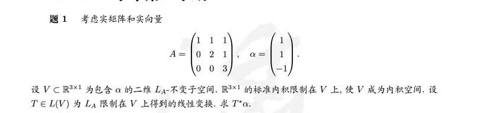
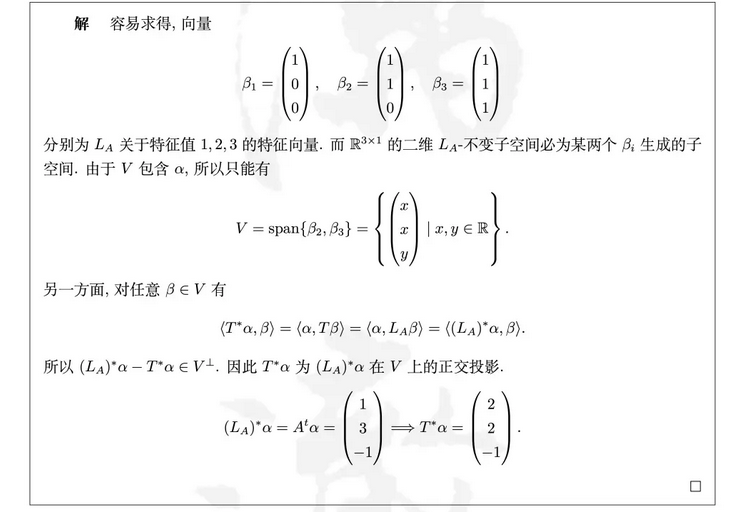

2025_12_01
last updated: Nov 17, 2026
Orthogonal Projection
- I computed matrix of the adjoin operator $T^*$ under an orthonormal matrix, showing that it is the transpose matrix of $T$ under the same basis when they are over $\mathbb R$ .
- The adjoin operator of the restriction of an operator can be computed, too, via projection.


- Two things I don't understand
- Why is $V$ necessarily spanned by two eigenvectors, as the solution claims?
logseq.order-list-type:: number- answer: ((6932e5e1-39b7-450d-b428-3f1afad9e70e))
logseq.order-list-type:: number
- answer: ((6932e5e1-39b7-450d-b428-3f1afad9e70e))
- How is the projection operator used? Did it simplify the calculation?
logseq.order-list-type:: number- It computed the projection of $A^t \alpha$ unto $V$. No.
- Why is $V$ necessarily spanned by two eigenvectors, as the solution claims?
2026-11-12: I just revisited this question. do not know what it says or the solution itself.
Then i seem to realize what it means.
$L_A \alpha - A^t \alpha$ is orthogonal to $\beta_1,\,\beta_2$.
So, it is in the space $V^\top$ spanned by the vector orthogonal to both $\beta_1$ and $\beta_2$ .
A spanning vector of $V^\top$ is $(1 \quad -1\quad 0)^\top$.
Let $v = (1 \quad -1 \quad 0)^\top$ and $v_n = \frac{1}{\sqrt 2} (1 \quad -1 \quad 0)^\top$ is its normalization.
$$\begin{align*}
& (1 \quad 3 \quad -1)\ v_n \cdot v_n \\
=\ & \frac{1}{2}\ (1 \quad 3 \quad -1)\ \begin{pmatrix}1 \\ -1 \\ 0 \end{pmatrix} \begin{pmatrix}1 \\ -1 \\ 0 \end{pmatrix} \\
=\ & \frac{1}{2} \times 2\ \begin{pmatrix}1 \\ -1 \\ 0 \end{pmatrix} \\
=\ & \begin{pmatrix}1 \\ -1 \\ 0 \end{pmatrix}
\end{align*}$$
So the answer is
$$\begin{pmatrix} 1 \\ 3 \\ -1 \end{pmatrix} - \begin{pmatrix} -1 \\ 1 \\ 0 \end{pmatrix} = \fbox {$\begin{pmatrix} 2 \\ 2 \\ -1 \end{pmatrix}$}.$$